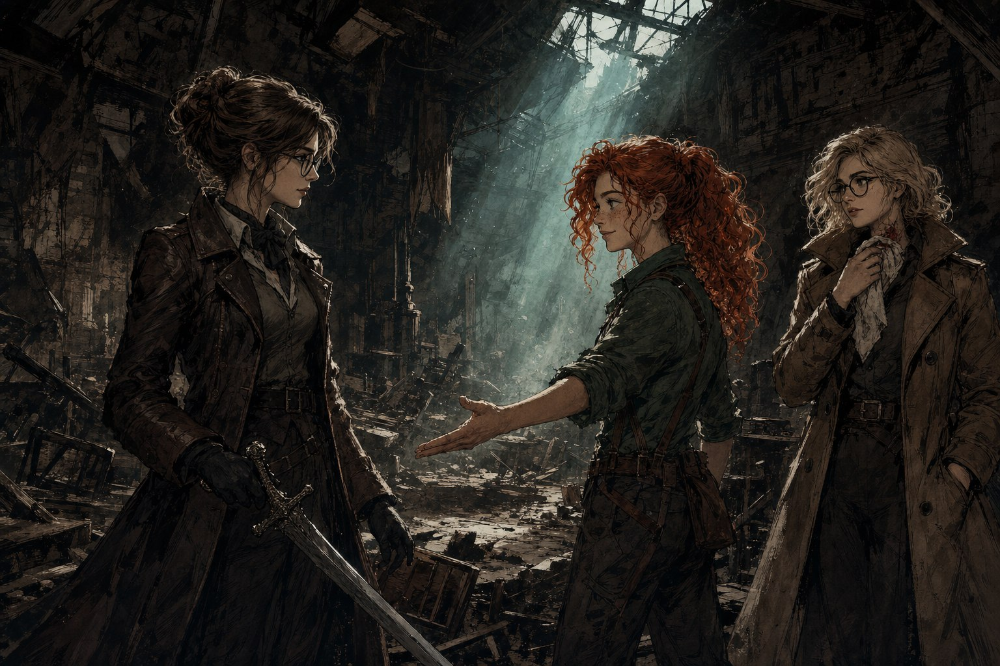

한 캠페인의 같은 자리에 다섯 시즌을 앉아 있던 사람이 매번 알아볼 수 없는 캐릭터를 들고 왔다. 시즌3의 플라이는 팀원들이 “싸이코패스”라 부른 76세 유령사 할머니였고, 시즌5의 오프너는 “따스하고 착하고 침착하면서도 귀여운” 거머리였다. 이 낙차를 같은 플레이어가 만들었다는 사실 자체가 팀에서 화제가 됐다.
“오프너는 정말… 시즌3 때 플라이 할머니를 생각하면 어떻게 같은 플레이어에게서 이렇게나 극과 극인 PC가 나올 수 있지 하고 놀라게 될 정도로 너무나도 따스하고 착하고 침착하면서도 귀여운 친구였습니다… 새삼스레 랑시님의 캐릭터폭이 정말 넓으시구나, 싶어서 존경스러운 부분이기도 해요.” — 날다다, 시즌5 캠페인 후기
본인도 같은 대비를 짧게 적어 둔다. “오프너는 플라이와 달리 멀쩡한 사람(???) 이었으므로 생각보다 정상적인 반응을 하더라고요.”(본인, 시즌5 최종화 후기) 이 글은 그 폭이 어디서 오는지에 관한 것이다. 후기를 따라가 보면 답은 재능이나 즉흥이 아니라 캐릭터를 만드는 방식 자체에 있다.
여백을 남겨 두고 시작한다
오랑시는 캐릭터 메이킹 단계에서 캐릭터를 완성하지 않는다. 그 원칙을 시즌4 0화 후기에 명시적으로 써 두었다.
“티알피지 캐릭터를 만들 때 설정을 느슨하게 해놓아야 나중에 다른 설정을 플레이중에 추가할 때도 걸리는 게 없어서 좋을 것 같단 팁을 본 적이 있어요. 그래서 최대한 힘을 빼고 만드려고 했는데 꽤 수월하게 끝난 것 같아서 마음에 듭니다.” — 본인, 시즌4 0화 후기
여백을 남긴 결과는 예고 없이 나타난다. 시즌3의 플라이를 두고 본인은 “적당히 구상했을 때는 분명 인자한 할머니였는데?”라고 적었다. 실제로 나온 것은 “너무 호감을 가지기 어려운 미친 나라팔아먹은 할머니 캐릭터”였다(본인, 시즌3 0화 후기). 시즌5의 오프너는 반대로, 빈 채로 들어가 채워진 경우다.
“오프너의 배경 설정,외모,성격 다 즉석에서 정한건데 생각보다 성실한 캐릭터가 나와버렸네요. 제가 광기를 담당하지 않으면 나머지 분들이 광기를 주체할 수 없이 뽐내시던데” — 본인, 시즌5 0화 후기
여기에 하나가 더 붙는다. 플레이북을 고르는 기준이 “안 해본 것”이다. 시즌4에서 이방인을 고른 이유를 “새로운 플레이북을 해보고 싶은 마음 반,아직 해보지 않은 기존 플레이북을 해보고 싶은 마음 반반”이라 적었고, ErrorHeart에서도 지식형과 누킹형 위저드 사이를 오간 과정을 그대로 남겼다. 다섯 시즌 동안 같은 플레이북이 한 번도 겹치지 않은 것은 우연이 아니다.
| 구간 | PC | 플레이북·클래스 | 자리 |
|---|---|---|---|
| 어둠칼 S1 망나니즈 | 겨우살이 | 거미 | 1화 이후 합류, 비전투원 |
| 어둠칼 S2 세이렌 상사 | 슈팅스타 | 족제비 | 팀의 활력 담당 |
| 어둠칼 S3 황혼전달자 | 플라이 | 유령사 | 76세 할머니, 파티의 마도학 |
| 어둠칼 S4 언체인드 | 물안개 | 이방인 | 조기 종료로 2세션 |
| 어둠칼 S5 로스트 앤 파운드 | 오프너 | 거머리 | 파티의 상식인 |
| Relight | 도베르트 다 사니치 | 장교 (군단 사령관) | 지휘·전술 |
| ErrorHeart | 콰에리온 녹티스 | 위저드 | 200살 드라코나 학자 |
광기라는 이름이 붙던 구간
시즌1의 겨우살이는 사실상 TRPG 첫 캐릭터였다. 본인은 “아무리 룰을 읽어도 감이 안 왔는데 캐릭터메이킹 인터뷰를 거치면서 서서히 머릿속이 구름이 걷히듯 스토리와 캐릭터의 윤곽이 잡히는 게 매력적이었”다고 적는다. 마스터는 그 첫 캐릭터에서 이미 플레이북의 통념을 벗어난 운용을 봤다.
“원래 거미 플레이북은 뒤에서 음모와 계략을 꾸미고(+플래시백을 많이 쓰고), 본인은 잘 나서지 않는 타입이라고만 생각했거든요. 하지만 2화 실플레이에서 이 장면을 보고 아 이게 겨우살이 식의 거미구나 하는 느낌이 왔어요. 겨우살이는 행동하는 거미인거죠.” — 마스터, 시즌1 캠페인 후기

시즌2의 슈팅스타에서 그 방향이 캠페인의 색깔이 된다. 마스터는 시즌 전체의 분위기를 이 PC에 돌렸다. “슈팅스타가 있었기 때문에 플레이가 이렇게 활력과 생기를 가질 수 있었다고 생각해요. (…) 다른 팀들의 어둠칼과 다른 유니크한 분위기를 만들 수 있었을 거라고 생각합니다.”(마스터, 시즌2 캠페인 후기)
“광기”라는 별칭이 붙기 시작한 것도 이 무렵이고, 시즌3에서 그것이 팀의 공용어가 된다. 팀원들은 그를 놓고 이런 문장을 쓴다.
“정말 할로겐님은,,,,,, 이게 된다고? 이걸? 싶은 거를 자 짜잔-! 된답니다! 맛있죠? 하고 한 술 떠먹인다음 (…) 캐릭터 재료를 가지고 오시는 구나, 라고 느꼈어요....... 진짜 독창적이셔........ / 그리고 혹시,… 할로겐님, 할머니 한 분을 삼키셨나요?” — 날다다, 시즌3 1화 후기
마스터가 플라이에 붙인 평가는 조금 다른 각도다. 그가 짚은 것은 기행이 아니라 세계관과의 접합이다.
“시나리오적으로도 기능적으로도 유령사가 없으면 진행이 어려웠던 부분이 많았죠. (…) 마치 마스터의 NPC인 것처럼 세계관에 잘 녹아들어 있는 것도 좋았고, 매번 파리처럼 손을 싹싹 비비거나 하는 등의 지문들도 재미있었습니다.” — 마스터, 시즌3 캠페인 후기
기행처럼 보이는 것 아래에 룰 계산이 깔려 있다는 것은 다른 플레이어가 더 정확히 봤다.
“플라이는 스트레스를 마나처럼 쓰는 유령사이기에 오랑시님이 악마와의 거래를 매우 잘 활용하시는 모습이 인상적이었습니다. 그동안 세션에서 악마와의 거래가 잘 활용되지 않았었는데 플라이의 활용을 보면 적극적으로 제안해 봐야겠다 생각하게 되네요.” — 직스, 시즌3 8화 후기
자리를 바꿔 앉는다
시즌4의 언체인드는 두 세션 만에 멈춰 물안개에 대해 남은 기록이 적다. 본인이 쓴 것은 0화 후기 한 편뿐이고 나머지는 1화를 보고 적힌 짧은 인상들이지만, 방향은 일관된다 — “냅다 껴안아버리는 물안개의 인사방식,,, 너무 특이한데 귀엽고 발랄하고 좋아”(날다다, 시즌4 1화 후기), “농담도 잘하고(!!!) 숙련된 플레이어답게(?) 분위기도 잘 타고 RP도 잘 하고”(에이포, 시즌4 1화 후기). 이방인을 고른 이유가 “아예 극단적이고 평범하지 않은 방식으로 플레이해야 경험치를 받을 수 있다”는 것이었으니, 예정대로 굴러가던 참이었다.

시즌5에서 그는 자리를 바꾼다. 위에 인용한 “제가 광기를 담당하지 않으면”이라는 문장이 그 선언이고, 오프너는 파티에서 정반대 역할을 맡는다. “진짜 매화마다 열심히 상식인 포지션에서 힘쓰는 오프너와 랑시님… 감사합니다…”(날다다, 시즌5 3화 후기) 이 자리는 아이디어를 내는 자리이기도 했다. 추리물이 된 시즌5에서 그가 “칼럼이 만약 진짜 죽였으면, 옷에 피가 묻지 않았을까”라고 던진 질문은 그대로 다른 PC의 대사가 됐고, 팀원은 그를 “추리게임 짬바가 있으신 랑시님”이라 적었다. 팀 자원을 쓰는 쪽도 오프너였다 — “팀을 위해 열기를 낮추려고 금전을 쓰는 오프너와 플러스 랑시님에게도 감동이었던 장면”이라는 대목이 시즌5 후기에 남아 있다. 마스터가 오프너에 붙인 마지막 평은 시즌3의 플라이와 나란히 놓으면 이 글의 처음으로 돌아간다.
“마지막에 트라우마를 얻으면서도 이를 악물고 자기 암시를 걸어가며 커버넌트의 조종간을 잡고 안정시키는 씬도 멋졌습니다. 오프너가 이 캠페인 역대 PC들 중 제일 귀여운 PC인 듯..” — 마스터, 시즌5 최종화 후기

세션 밖에서 룰을 미리 풀어 둔다
폭의 다른 쪽 근거는 준비다. 어둠칼 시즌3 0화에서 그는 시즌에 들어가기 전에 쓸 룰을 미리 정해 두고 시작한다 — “이번에는 악마의 거래랑 분발도 열심히 쓰고..특히 플래시백 기능도 까먹지 않고 활용해서”. 이 습관이 가장 뚜렷하게 드러난 것이 Relight의 장교 도베르트다.
“정말 ‘장교’라는 직업의 효율과 스킬셋(?)을 잘 이해하고 세션 내에서 활용하시는 모습 (…) 그 뒤에는 랑시님이 세션 외의 시간에 열심히 연구하고, 또 어떻게 플레이하면 효율적인 플레이를 할 수 있을까, 끊임없는 고민의 결과로 이런 멋진 플레이가 나오는 게 아닐까 싶습니다.” — 플레이어, Relight 3화 후기
도베르트는 “능력주의. 효율적인 방법을 선택하려고 하지만, 그 선택으로 비롯된 파장에 대해서는 괴로워할 줄 아는 인격도 분명히 있다”는 설정으로 시작해, 최종화에서 신병을 대신 죽게 하는 ‘복종’을 선언하는 자리까지 간다. 그 장면은 캠페인의 정점으로 기록됐다. 동시에 같은 캠페인에서 그는 오리지널 신병을 여럿 만들어 돌려 플레이했고, 도베르트 밖에서는 정반대로 놀았다. “역시 평소에 도베르트같은 고지식한 캐릭터를 플레이하다가 쌓여뒀던 드립력을 방출하니 신나더라고요.” (본인, Relight 6화 후기)
ErrorHeart의 콰에리온에서도 같은 패턴이 반복된다. 본인은 이 캠페인을 “제 첫 티알피지캐릭터가 디앤디류 할아버지 마법사였는데… 15년?그 이상의 세월이 지나 다시 제가 디앤디를 플레이할 기회가 찾아오다니”라며 15년 만의 복귀로 규정했고, 팀은 그 결과를 이렇게 적었다.
“룰적인 부분에서 ‘위저드’ 라는 직업은 이런 것입니다! 라는 걸 너무나도 잘 보여준 랑시님의 모습에 감탄하게 되는 세션이기도 했습니다. (…) 특히나 볼트 비콘을 쓰면서 ‘빛나라!!’ 하고 외치는 부분도 좋았구요.” — 플레이어, ErrorHeart 2화 후기
매번 다시 시작하기로 한 사람
캐릭터를 매번 갈아 끼울 수 있는 사람은, 자기 플레이도 매번 갈아 끼울 수 있다고 생각하는 사람이다. 오랑시의 후기에서 가장 자주 반복되는 형식은 캐릭터 자랑이 아니라 다음번에 다르게 해보겠다는 메모다. 시즌2 캠페인 후기의 마지막 문단이 대표적이다.
“어느때는 너무 눈치를 보느라 능동적이지 못한 플레이를 할 때도 있었고 어느 때는 너무 치고 나가는 플레이를 하고 세션이 끝나고 후회한 적도 있었죠. (…) 저는 능동적인 플레이어였나요? 마지막까지 같이 해서 즐거웠던 기억이 더 많이 남는 플레이어였으면 좋겠네요.” — 본인, 시즌2 캠페인 후기
시즌3 총평도 같은 자리에서 끝난다 — “좀 더 캐릭터의 욕망을 바로 알고 순수하게 그 동기에 따라 움직이고 싶네요.” 그리고 다음 시즌의 캐릭터는 늘 그 메모가 가리키던 방향으로 나왔다. 폭은 결국 이 메모들이 쌓인 결과다. 다섯 시즌과 두 캠페인을 지나 그가 남긴 마무리는 캐릭터가 아니라 테이블에 대한 것이었다.
“몇년동안이나 계속 함께한 어둠속의 칼날 세계관 속에서 재밌게 즐겼던 TRPG 한 캠페인을 보내줘야한다는 게 또 다시 체감이 되네요. (…) 같이 나이를 먹어가면서 티알피지를 계속 했으면 좋겠습니다. (…) 최고의 잊지못할 TRPG 캠페인이었습니다.” — 본인, 시즌5 캠페인 후기
마스터가 캠페인 전체의 감사 명단에 그를 올리며 쓴 한 줄은 짧다. “거의 처음부터 참여해서 늘 힘이 되어주신 오랑시님.” 다섯 번 다른 사람이 되어 앉아 있던 자리가, 실은 한 번도 비지 않은 자리였다는 뜻이기도 하다.
근거는 오랑시 본인이 쓴 어둠칼 후기 44편과 Relight·ErrorHeart 후기, 그리고 마스터와 다른 플레이어들이 그를 언급한 대목이다. 시즌4는 2세션 만에 종료돼 물안개에 대한 기록이 얇고, Relight·ErrorHeart 후기는 작성자를 본문 근거로만 확인할 수 있어 일부 인용의 화자를 “플레이어”로 남겨 두었다.